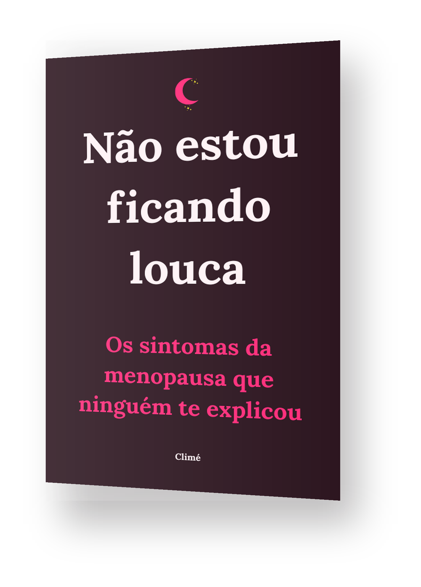

Os sintomas que você sente têm nome, têm explicação — e ninguém te contou.
Um guia direto e acolhedor sobre o que está acontecendo com o seu corpo na menopausa e na fase que vem muito antes dela.
QUERO ENTENDER O QUE ESTÁ ACONTECENDOAcesso imediato • Pagamento único • Garantia de 7 dias
E o pior: alguém já te disse que era "só estresse" ou "coisa da idade".
O que você sente tem nome, tem explicação no seu corpo, e tem muito mais a ver com essa fase da vida do que alguém te contou.
Você não está imaginando. Você não está exagerando. E definitivamente não está sozinha.
O problema nunca foi você. Foi a falta de informação.
São mais de 17 milhões de mulheres vivendo essa fase no Brasil agora.
"Não estou ficando louca" é um guia direto, acolhedor e baseado em fontes médicas confiáveis — pra você finalmente entender o que está acontecendo com o seu corpo.

Tudo em uma linguagem que fala com você — não com o seu médico.
Tem muito conteúdo solto por aí sobre menopausa — vago, assustador ou tentando te vender uma cura milagrosa.
Este guia é diferente. Todo o conteúdo é baseado em fontes médicas e institucionais confiáveis:
Sem promessas de cura. Sem fórmula mágica. Só o que você precisa saber, explicado com clareza.
Uma única consulta particular com ginecologista custa, em média, R$300 ou mais. Este guia reúne, de forma clara e organizada, o que você precisa entender antes mesmo de marcar a sua — por uma fração disso.
Pagamento único • Acesso imediato
R$39,90 • Pagamento único • Acesso imediato • Garantia de 7 dias
Se em 7 dias você sentir que o guia não era pra você, devolvemos 100% do seu dinheiro. Sem perguntas, sem complicação.
A única coisa que você tem a perder é a sensação de estar perdida.
Comece hoje a entender o que está acontecendo com o seu corpo.
R$39,90 • Pagamento único • Acesso imediato • Garantia de 7 dias